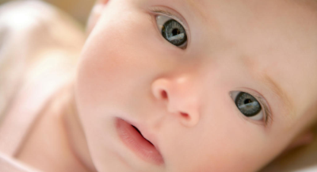
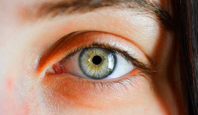
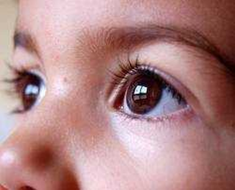
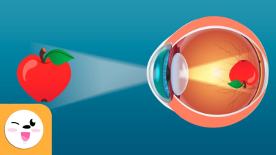

| El sentido de la vista o visión es posible gracias a un órgano receptor, el ojo, que recibe las impresiones luminosas y las transforma en señales eléctricas que transmite al cerebro por las vías ópticas |  | El ojo es el órgano encargado de la recepción de los estímulos visuales, cuenta con una estructura altamente especializada producto de millones de años de evolución. |  |
| El ojo es un órgano par situado en la cavidad orbitaria. Está protegido por los párpados y por la secreción de la glándula lagrimal, tiene capacidad para moverse en todas direcciones gracias a los músculos extrínsecos del globo ocular. |  | Los rayos paralelos de luz llegan al ojo ópticamente normal (emétrope) y son enfocados sobre la retina. Dependiendo de la especie animal, el enfoque puede resolverse aumentando la distancia entre el cristalino y la retina o aumentando la curvatura o poder refringente del cristalino como ocurre en los mamíferos |  |